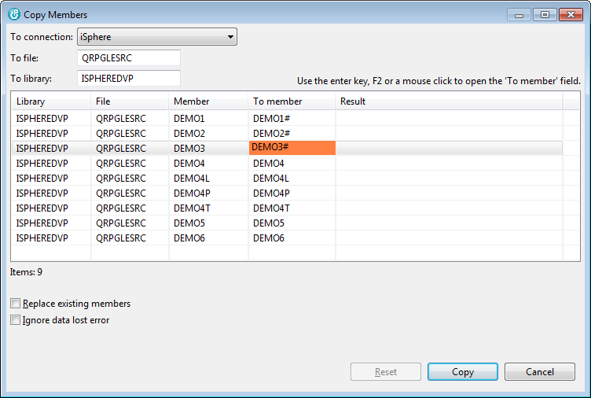

The following dialog displays the items that are copied. Use the [Enter] key or command key F2 to edit the name of the target members. You may also click on the member name to open the field. Once a field is in edit mode, you can use the tab key to move forth and back between the member names.

Click Copy to start the copy process.
The result of the copy operation is displayed in column Result.
| Warning: Copying members between connections may take significant time, because the members have to be downloaded to your PC before they can be uploaded to the target host. |
The available source file search options are:
| Replace existing members | - | Specifies whether to replace existing members. The system clears the existing member and adds the new records. |
| Ignore data lost error | - | Specifies whether to ignore data lost error. Use this option to copy source members from e.g. 112-byte source files to 92-byte source files. |